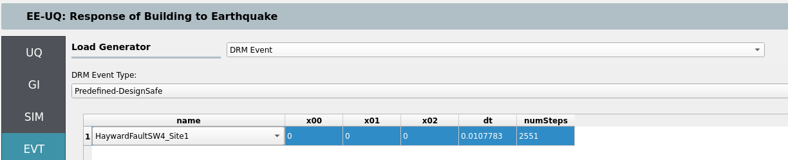
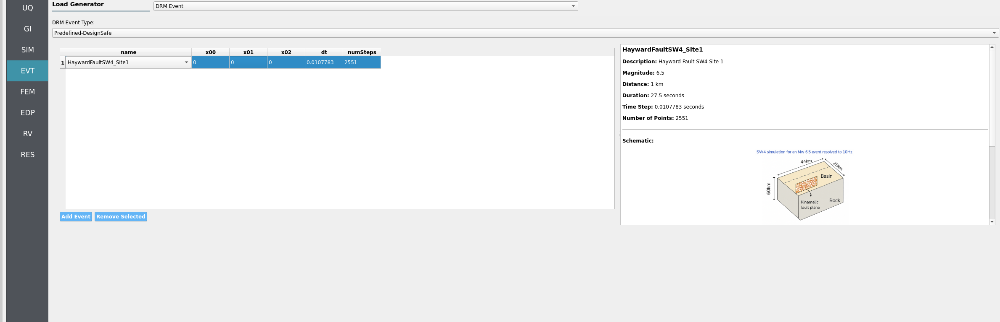
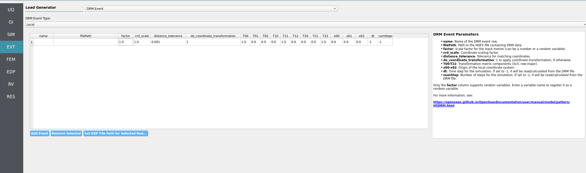

2.4.8. Domain Reduction Method (DRM)¶
This panel, as shown in Fig. 2.4.8.1, lets the user apply a precomputed 3D wavefield to the boundaries of a local SSI model. That wavefield can be selected from curated datasets on DesignSafe or read from a local H5DRM file. DRM allows realistic source‑to‑site wave propagation to enter a smaller, high‑resolution domain.

Fig. 2.4.8.1 DRM event selection panel (placeholder – add overview screenshot).¶
Two DRM modes are available in EE‑UQ:
Predefined (DesignSafe): use a curated dataset hosted on DesignSafe (e.g., Hayward Fault SW4 runs). No local files are required.
Local: use your own H5DRM file stored locally.
Note
To use DRM with SSI, set boundary_conditions = DRM in the SIM → Soil and Foundation tab (SSI Type 1). See the SSI SIM section for DRM absorbing layer options and resource planning.
2.4.8.1. Predefined DRM (DesignSafe)¶
Select from a list of predefined DRM datasets available on DesignSafe (e.g., SW4 Hayward Fault sites near/mid/far). The panel provides:
Dataset browser / selector: choose a site or scenario from the list. A small viewer displays metadata (e.g., footprint size, mesh spacing).
Center of your local model: provide the center coordinates for your SSI domain so the imported wavefield aligns with your local box.
Time step and number of steps: you may set
dTandnumStepsexplicitly, or leave them on auto‑detect (when supported by the dataset) to let EE‑UQ configure these from the DRM file.

Fig. 2.4.8.1.1 DRM event panel (Predefined DesignSafe dataset) – add screenshot here.¶
Tips “”” - Predefined datasets are large; using them directly avoids uploading huge files. - Ensure your SSI soil box meets the dataset’s minimum extents (e.g., 128 × 128 × 48 m for 4 m mesh spacing).
2.4.8.2. Local DRM (H5DRM)¶
Use a local H5DRM file that you prepared or received. The panel exposes the low‑level parameters needed to map the DRM file to your local coordinates (based on the DRM event widgets):
File: select the local H5DRM file.
Coordinate transform: toggle whether to apply a coordinate transform and, if enabled, provide the 3×3 matrix entries (
T00..T22). Use this to rotate/reorient the incoming field relative to your local axes.Scale:
crd_scaleto reconcile unit systems, if needed.Time control:
dT(time step) andnumSteps(number of steps). Set to match your DRM file. Some files can be auto‑inspected; otherwise provide values explicitly.DRM box alignment: provide the reference point (e.g.,
x00, x01, x02for the model center/origin) to position the local box within the DRM dataset.Tolerance:
distance_tolerancefor nearest‑neighbor matching within the DRM box.

Fig. 2.4.8.2.1 DRM event panel (Local H5DRM) – add screenshot here.¶
Note
If you run remotely at DesignSafe, EE‑UQ will upload your local H5DRM file. Uploads may take time for very large files.
Ensure your local SSI domain size and mesh spacing are compatible with the DRM dataset. The DRM viewer in the event panel can help verify extents.
For output extraction under DRM, prefer User‑Defined EDP and provide recorders (e.g., a
recorders.tcl) for structural and/or soil nodes.